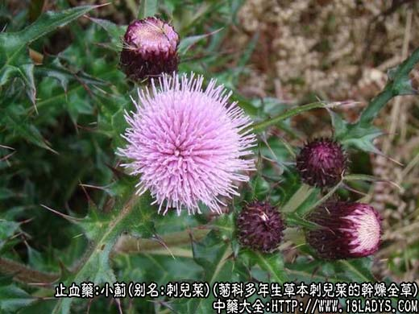
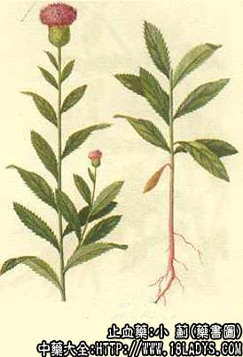

原文连接:https://www.daquan.com/post/2283.html



本品为常用中药。历史同大蓟。
别名：刺儿菜。
来源：为菊科多年生草本植物刺儿菜或刻叶刺儿菜的干燥全草，野生于路旁及田间。
产地：全国各地均有生产。
植物形态：1、刺儿菜：多年生草本，主根单一，侧生、根须状，茎直立，高约30～50厘米，紫棕色或绿色，无毛或有蛛丝状毛，上部有少数分枝，基生叶在花期枯萎。茎叶互生，长椭圆形，长7～厘米，宽1.5～2.5厘米，边缘有不规则的小刺。头状花序顶生，单性；雄花序较小，总苞长约23毫米，卵状，苞长多层，边缘膜质，先端具刺，花冠淡紫红色。瘦果椭圆形，略扁；冠毛羽状，白色，先端膨大而弯曲。
2、刻叶刺儿菜：较前中全株高大，高可大1米，茎较粗有条棱，色绿。叶长圆形，边缘有缺刻至羽状浅裂。花托有托毛。瘦果倒卵形，冠毛白色。
性状鉴别：1、刺儿菜：茎呈圆柱形，常已折断，直径2～3毫米，微带紫棕色，表面无毛或有柔毛及纵棱。质脆，折断面纤维状，中空。叶片大多破碎不全，皱缩而卷曲，黄绿色，边缘微波状，有金黄色针刺，茎端有头状花序，总苞钟形，苞片黄绿色，5～6裂，花冠多脱落，冠毛羽壮状常外露。气微，味微苦涩。
2、刻叶刺儿菜：茎比刺儿菜粗而长，直径3～5毫米。叶的边缘有缺刻，具有多数刺毛，气味同上。
以上两种，均以色灰绿，质嫩，叶多，无根者为佳。
主要成分：含生物硷，挥发油，苦味质量等。
功效与作用：1、凉血而破瘀，炒炭后确能缩短出血时间；
2、消炎、利尿而散痈肿。
炮制：切咀，生用或炒炭。
性味：甘、凉。
归经：入肝经。
功能：凉血、止血。功同大蓟而力弱，且不如大蓟之善消痈肿。
主治：吐血、尿血、外伤出血、传染性肝炎、肝肿大。
临床应用：主治热证出血。鼻衄、牙龈出血、咯血、便血，均可应用，有凉血破瘀作用，常与小蓟及其他止血药同，方如十灰散。
用量：7～15g，鲜品30～60g，小蓟15g、荷叶1张、侧柏叶15g、茜草根15g、棕皮15g、丹皮9g、栀子9g、生大黄9g、茅根15g，以上十味药烧黑存性，研极细末，每服9～15g，用鲜萝卜汁或鲜藕汁调服。
附：小蓟，为菊科植物刺儿菜的干燥全草(广东习惯上用其根)。味甘，性凉。含生物硷。有止血作用，能收缩血管，并能使凝血时间和凝血酶时间缩短。用鲜品较好，炒炭止血作用反比生品差。此外，又能降低麻醉动物的血压。临床常用于热证出血，尤其血淋和月经过多，但咳血、吐血、鼻衄、便血亦可用，常配生地、蒲黄等，方如小蓟饮子。处方：小蓟根、生地、炒蒲黄、藕节、淡竹叶、木通、滑石、黑山栀、当归、甘草等各等分，研成粗末，每次12g，水煎温服，治血淋。小蓟常用量9～18g(鲜品30～60g)，入煎剂不宜久煎。
大小蓟功用大同小异。小蓟专于止血，大蓟兼疮肿。在广东一般用大蓟较多，或大小蓟混杂同用。
注：1、小蓟的全国药用情况，与大蓟同样复杂，广大地区所用的小蓟为菊科植物刺儿菜的全草，而北京、山西等地称之为“大小蓟”；内蒙古呼市、包头以本种花后的全草称大蓟，嫩时称小蓟；东北个别地区，则以菊科植物苣卖菜的全草作小蓟。
2、根据目前用药情况及历代本草记述，小蓟应以刺儿菜为主。